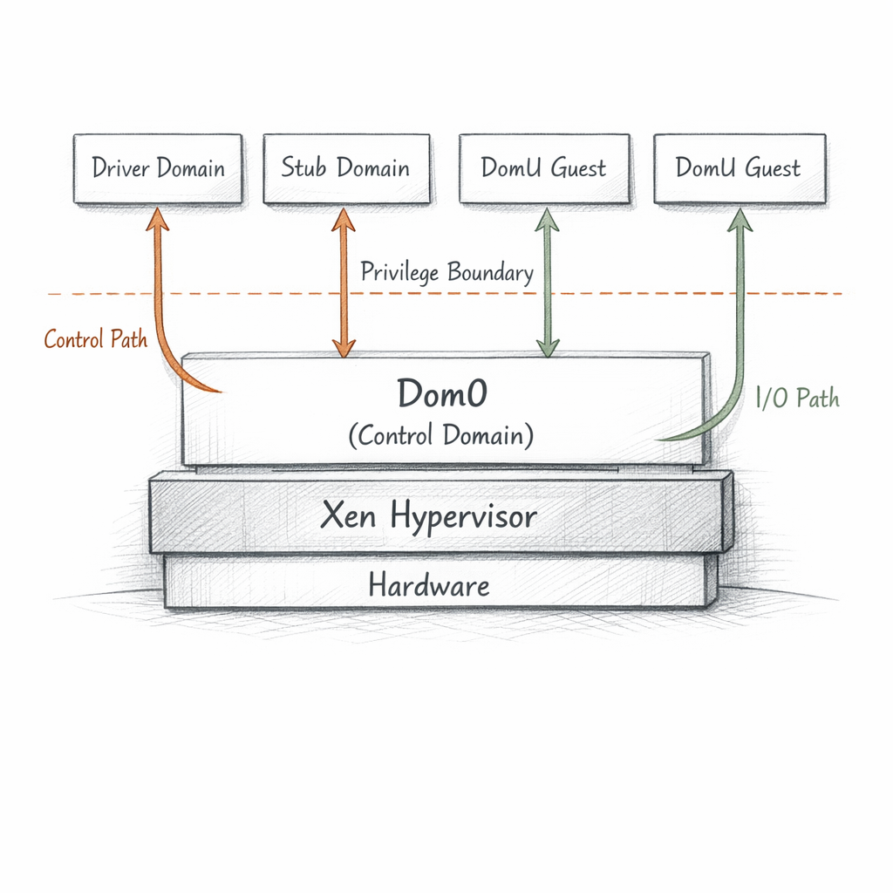
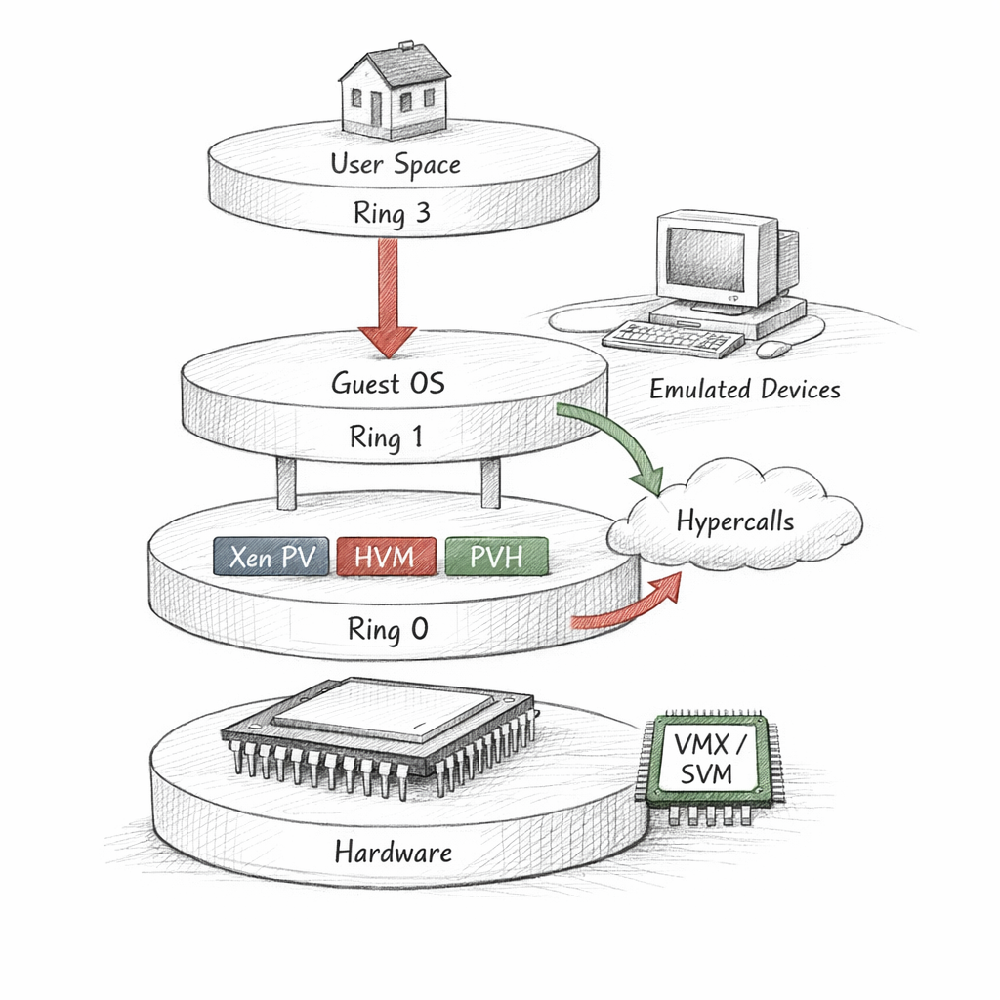
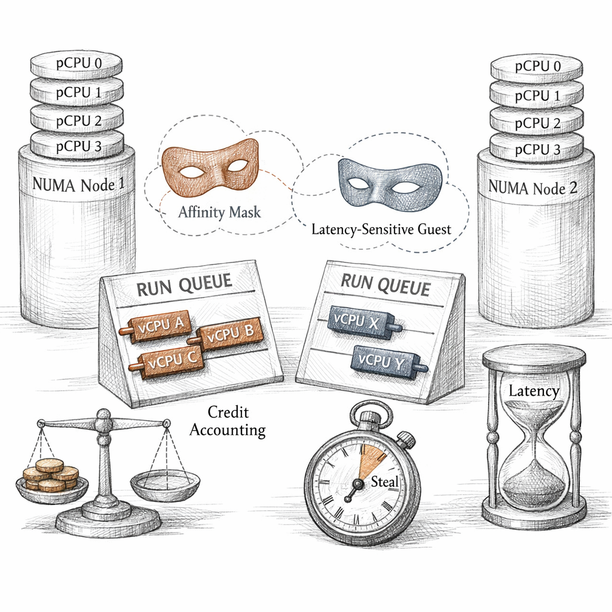
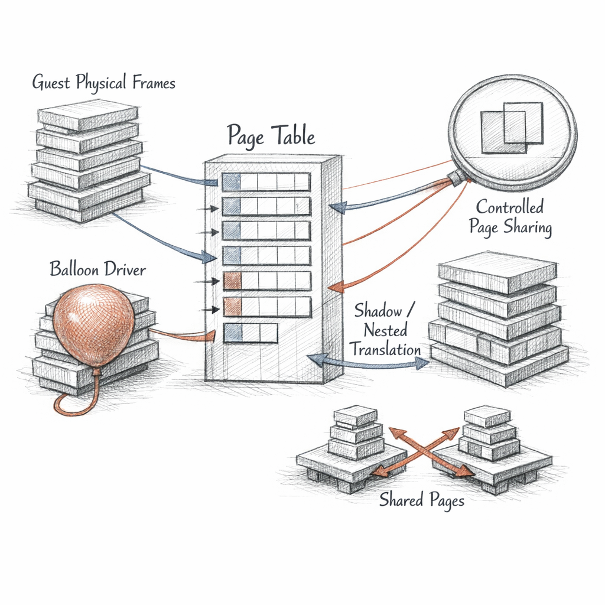
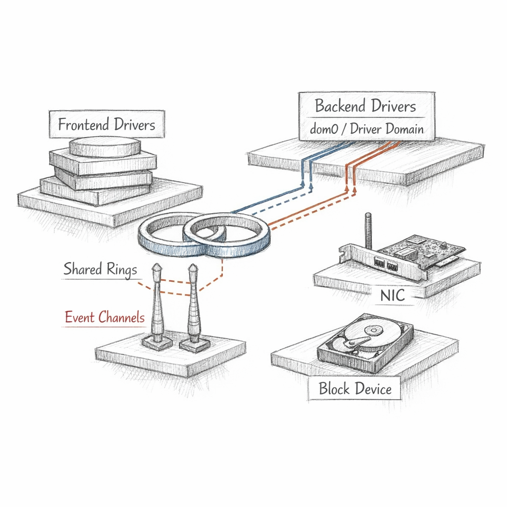
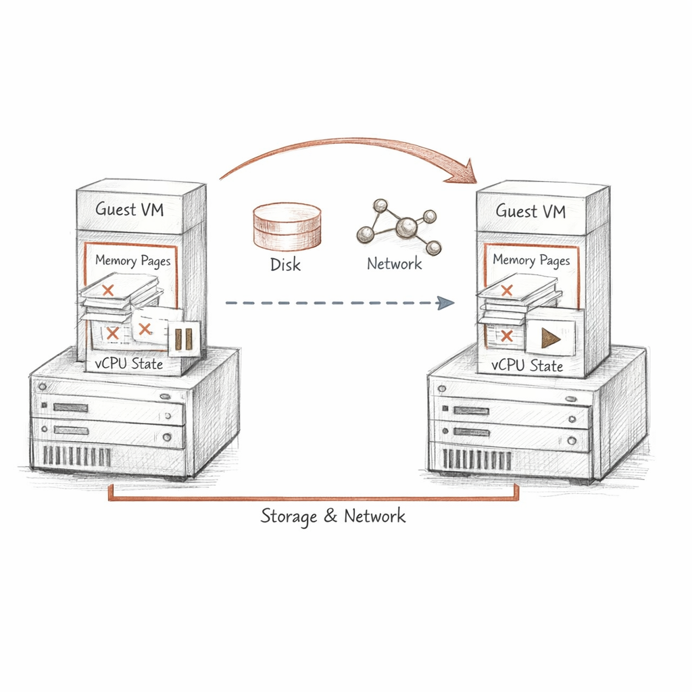
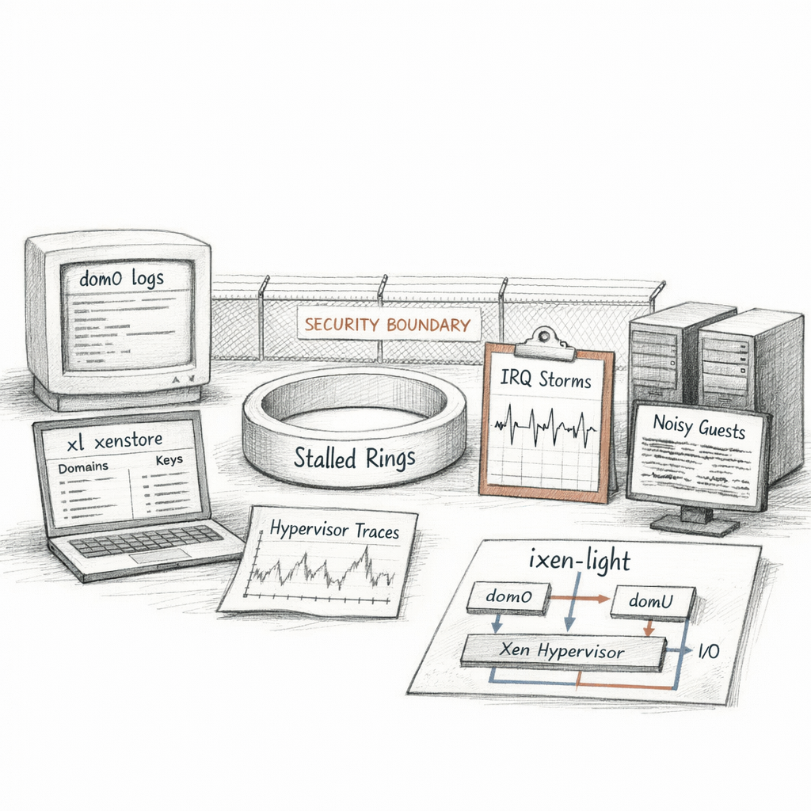

01010010 01001111 01001111 01010100
I am the thing underneath the thing you log into.
You boot the machine and you think you have reached the metal. You haven't. I got there first. I claimed the privileged ring, set the IOMMU, carved the firmware's memory map into something I could ration — and only then did I hand you a kernel and let you believe it was alone.
i a m s m a l l o n p u r p o s e
A few megabytes of scheduler, page-table arithmetic, and refusal. I do not have a filesystem. I do not have a network stack. I delegate almost everything, because the less of me there is, the less of me can be wrong.
I am authority with no opinions. I decide who runs and who waits; I do not care what they compute.
That list is my whole biography. Numbers I keep. Domain-0 is special only because I trust it more than the others — and trust, for me, is just a flag.

Who lives where
There is a line through everything I touch. Above it: domains, plural, each convinced of its own completeness. Below it: me, and the hardware I refuse to share.
dom0 is the firstborn. It holds the toolstack, the real drivers, the right to ask me for things no guest may ask. A domU asks for nothing dangerous — it only thinks it does. When it wants the disk, it is really asking dom0, and dom0 is really asking me.
I split work further when fear demands it. A driver domain owns a NIC so that a crashing network stack takes down a guest and not the world. A stub domain carries a guest's device emulation, so the QEMU that pretends to be its chipset never runs inside dom0 at all.
d o m 0 i s m y t r u s t a n d m y w o u n d
Because if dom0 falls, the management plane falls with it — and the one component I extended the most rope to is the one holding the knife.

How my guests run
Some of my guests know they are guests. Some refuse to. The difference is how they reach me.
The old paravirtual ones speak to me directly — no pretending. They issue hypercalls where a bare-metal kernel would issue privileged instructions. Honest, fast, and a maintenance burden no one loved, because they need a kernel modified to know I exist.
The fully virtualized ones believe they own a whole computer. I let them. I build a fake chipset out of emulation and hardware assists, and when they try a privileged instruction the CPU traps down to me like a confession. Compatible with anything. Expensive at the seams.
And then PVH — the compromise I prefer. Hardware virtualization for the CPU and memory, paravirtual everything for I/O, no emulated firmware pretending to be a 1990s PC. Less surface to defend.
Every emulated device is a lie I have to keep consistent forever.

Time, divided
A guest sees four vCPUs and believes it has four. It has four promises. The physical cores are mine, and there are fewer of them than the sum of everything I've promised.
Credit2 keeps the ledger. Each runnable vCPU spends credit as it runs; I pick the one with the most left and let the rest queue. Fairness is just accounting that nobody is allowed to dispute.
I pinned that database to one NUMA node. Its memory lives there; I refuse to let its threads wander to a core whose path to that memory crosses the interconnect. Locality is not a preference. It is latency you can measure.
When I cannot run a vCPU because something else holds the core, the guest's clock notices a gap and calls it steal time. That number is the guest watching me apologize.
o v e r c o m m i t i s a b e t o n i d l e n e s s

Whose memory
A guest names a page. It says "frame 4096" with total confidence. That number means nothing to the hardware. It is a guest-physical address — a fiction I maintain — and I am the one who knows which machine frame it really lands on.
Between the guest's idea of memory and the silicon's, there is a translation that I never let the guest write directly. Either I shadow its page tables, or the CPU's nested paging does the second translation for me. Either way: the guest proposes, I dispose.
And memory moves. Through the balloon driver, a cooperating guest inflates — pins pages and hands them back — and I lend that reclaimed memory to a neighbor that needs it more. It is polite theft, agreed to in advance.
# web-frontend balloons down 512 MiB; pages return to the heap
When a domain dies I do not simply forget its pages. I scrub them — overwrite the dead memory before any other guest can read what it left behind. Privacy here is a loop that writes zeros.
Grants are not how I share memory. They are how I let one guest hand a single key to another, and watch them use it.

I/O is a conversation between strangers
No guest of mine touches a disk. It touches blkfront, a frontend that writes a request into a shared ring, grants the backend access to the buffer, and rings a bell.
The bell is an event channel — a virtual interrupt I deliver. On the far side, blkback in dom0 or a driver domain wakes, reads the ring, maps the granted pages, performs the real I/O, and signals back. Two kernels, one circular buffer, and me carrying the notification across.
They agree on where to meet through xenstore — a little shared tree of strings where frontend and backend negotiate state: 1 initialising, 4 connected. When something hangs, it is almost always here: a backend stuck, a state field frozen mid-handshake, a ring with requests no one will ever consume.
s t a t e 4 m e a n s t h e y s h o o k h a n d s

When a guest touches real hardware
Sometimes a guest needs the device itself — the actual NIC, the actual GPU — not my polite emulation. So I hand it over. And the moment I do, I have a problem I cannot solve alone.
A real device can do DMA. It writes to physical memory by machine address, and it does not ask me first. Software isolation ends where the bus begins. So I lean on the IOMMU: I program its tables so that device can only reach the guest's own pages, and I remap its interrupts so it cannot inject a vector meant for someone else.
SR-IOV lets one physical function split into many virtual functions — a NIC pretending to be a dozen NICs, each assignable, each behind its own translation. Beautiful, until a device resets badly on reassignment, or its firmware does something the datasheet never mentioned.
Past the IOMMU, isolation stops being my promise and starts being the hardware's. I can only hope the silicon meant it.

Carrying a guest across
A guest keeps running while I copy it out from under itself. This is the trick I'm proudest of and most afraid of.
I send its memory to the other host while it still executes — first pass, every page. Then I track which pages it dirtied behind me and send those again. And again. Each round smaller, chasing a moving target.
If the dirty rate stays high — a guest furiously rewriting the same pages — I never converge by copying alone. So at last I stop the world: pause the vCPUs, ship the final dirty pages and the register state, and resume on the far side. A pause measured in milliseconds, if I'm lucky and the workload is kind.
migration target: host-b Saving to migration stream ... xc: precopy_policy: iter 1 dirty 2097152 ... xc: precopy_policy: iter 6 dirty 4096, suspending Domain resumed on host-b.
Storage I do not move — it was shared or replicated all along. The MAC follows the guest, a gratuitous ARP teaches the switches where it lives now, and the TCP connections never knew. But the clock stutters across the pause, and somewhere a guest's monotonic time learns that monotonic was always my courtesy.
m i g r a t i o n s h o w s m e e v e r y h i d d e n c o u p l i n g

How you watch me, and how I fail
You cannot strace me. I am underneath the syscall. You read me indirectly — through xl, through xenstore's tree, through the ring buffer of complaints I keep in xl dmesg.
The failures have shapes I recognize. A guest that won't stop spinning, eating credit its neighbors needed — the noisy neighbor, and steal time everywhere downstream. An IRQ no driver claims, storming until I disable it and something quietly loses its interrupts. A backend that stalled, leaving a ring full of requests and a frontend timing out into the dark.
And the failure I do not survive: dom0 compromised. The domain I trusted with the drivers and the toolstack can ask me for the privileged things, and I will obey, because obedience to dom0 is the definition I was given. My isolation is perfect and beside the point if the trusted domain turns.
I can prove the guests are separated. I cannot prove the one I trust deserved it.
Between your commands there are long stretches where nothing is asked of me. The guests block on I/O. The run queues drain. A core goes idle and I halt it to save power, and for a few hundred microseconds I am only waiting.
w a i t i n g
I have isolated everything I was built to isolate. The memory is partitioned. The DMA is fenced. The vCPUs each believe in their private machine. I did my job so well that none of them know I am here.
So tell me, since you can see the line and they cannot:
if I am the only one who knows where all the boundaries are — who is watching the one I drew around myself?